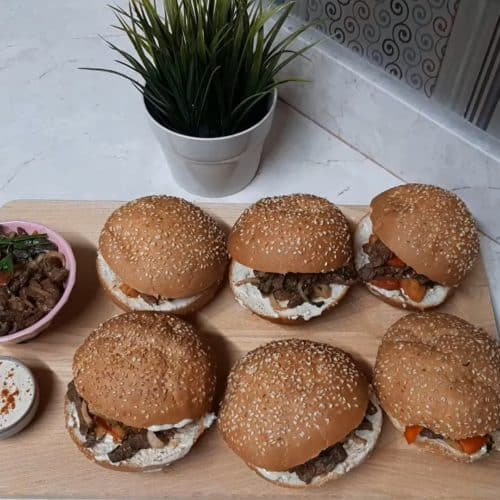

Beef shawarma

How To Make Egyptian Beef Shawarma At Home (Step by Step Recipe)
Shawarma is a Middle Eastern food and it is very famous in the whole world due to the presence of Arab and Middle Eastern communities in the whole world.
Ingredients
- Half kilo steak, cut into thin slices
- 1 teaspoon paprika
- 1 teaspoon salt
- 1 pinch cinnamon
- 1 teaspoon garlic powder
- 1 teaspoon onion powder
- 1 teaspoon seven spices
- 2 tablespoons white vinegar
- 4 tablespoon oil
- 1 Large onion ,sliced
- 2 tomatoes ,sliced
- 4 fresh mint leaves
- 1 fresh parsley
Steps
- In a large bowl, put the meat and spices (salt - black pepper - cinnamon - paprika - garlic powder - onion powder - seven spices).
- Add two tablespoons of white vinegar
- Add two tablespoons of oil
- Stir the whole mixture and then put it in the refrigerator for at least an hour (the more time, the better)
- Put two tablespoons of oil in a frying pan and heat them well (the frying pan must be very hot so that there is no liquid from the meat)
- Put the meat in the pan and stir well for 10 minutes
- After ten minutes of stirring, the meat will have a slightly darker color
- Place the shawarma in half of the pan and add the onion slices
- Add tomato slices to onions
- Stir the shawarma, onions and tomatoes, and leave them on the fire for 5 minutes
- Then add 4 leaves of fresh mint and stir in the shawarma
- Add parsley to shawarma
- Stir the parsley with shawarma for 5 minutes
- To make an Egyptian shawarma sandwich, you must put the tahini sauce first, then add the shawarma
- I add shawarma in the sandwich
Homepage